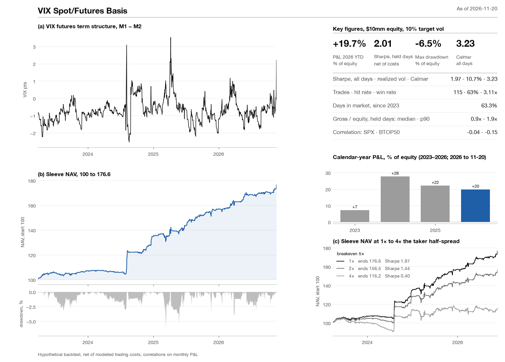
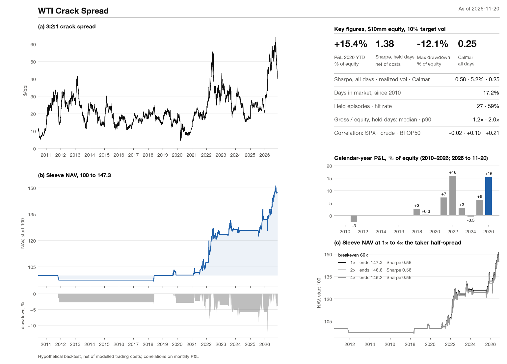
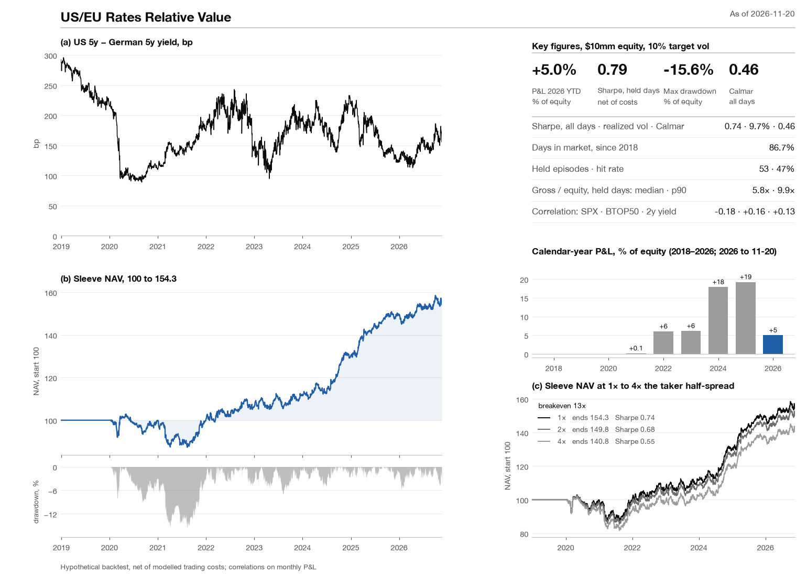
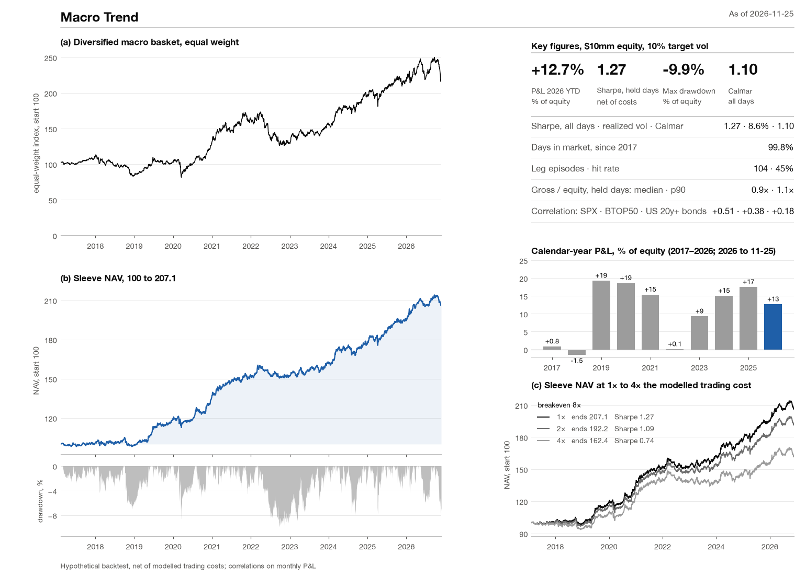

Systematic Trading · Quantitative Research
| Signal | Description | Window | Sharpe (held) | In market | Max DD | Cost b/e |
|---|---|---|---|---|---|---|
| VIX Spot/Futures Basis | Basis/Term Structure Relative Value | 2023–26 | 2.01 | 63.3% | −6.4% | 5× |
| WTI Crack Spread | Energy RV | 2010–26 | 1.38 | 17.2% | −12.1% | 69× |
| US/EU Rates | Duration-neutral RV | 2018–26 | 0.80 | 86.8% | −15.6% | 13× |
| Macro Trend | Diversified macro factor basket | 2017–26 | 1.27 | 99.8% | −9.9% | 8× |



